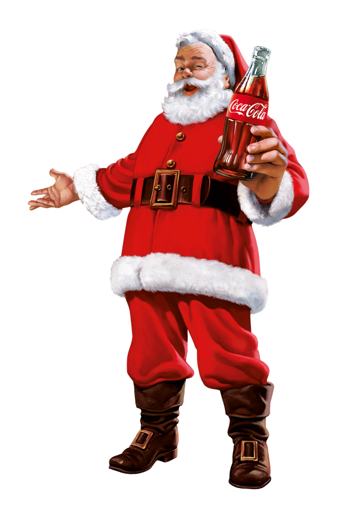

For many, Coca-Cola is closely associated with Christmas and dates back to the 1920s. Since then, Coca-Cola has enhanced the magic of Christmas by, among other things, creating the image of Santa Claus as we know him today.

For many, Coca-Cola is closely associated with Christmas and dates back to the 1920s. Since then, Coca-Cola has enhanced the magic of Christmas by, among other things, creating the image of Santa Claus as we know him today.

In 1931, the Swedish descendant Haddon Sundblom was commissioned by Coca-Cola to illustrate Santa. The updated version came to standardize the image of Santa Claus as big and happy, with a white beard and a red and white suit.
Haddon Sundblom continued to paint Santa Clauses for Coca-Cola until 1964. Several of his paintings have later been exhibited at, among others, the Louvre in Paris, the Royal Ontario Museum in Toronto and the department store NK in Stockholm. Today, several of the works can be viewed at the World of Coca-Cola in Atlanta.
